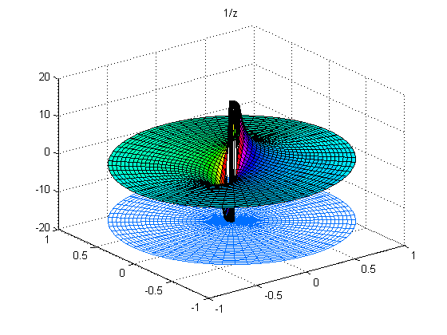
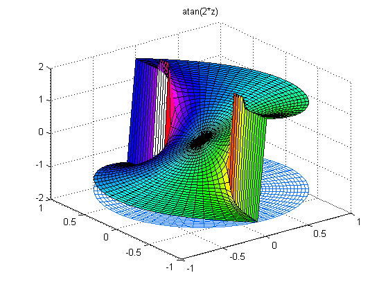
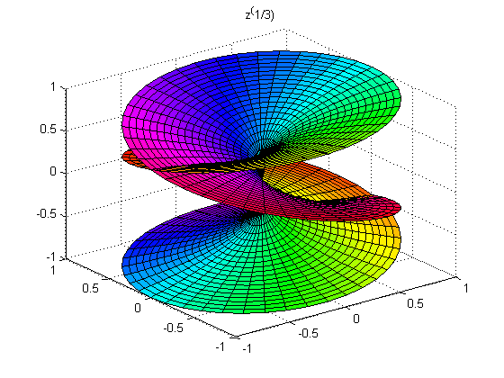

複素関数
MATLAB® は、複素数変数に対するいくつかの非常に面白い操作の実行に役立ちます。
f(z) を複素関数とします。(以下の極座標で表される) 単位円盤で作られる領域を考えます。表面の高さは実数部 REAL(f(z)) です。表面の色は虚数部 IMAG(f(z)) です。カラー マップは HSV カラー モデルの色相を変えます。
CPLXMAP は、複素関数をプロットします。z を領域、f(z) は範囲を生成する写像となる場合、構文 CPLXMAP(z,f(z),bound) として実行されます。
CPLXGRID は、極座標の複素数のグリッドを生成します。Z = CPLXGRID(m) は、(m+1) 行 (2*m+1) 列の複素極グリッドです。
colormap(hsv(64))
z = cplxgrid(30);
cplxmap(z,z)
title('z')

f(z) = z^3。1 の 3 乗根に 3 つの最大値を持ちます。
cplxmap(z,z.^3)
title('z^3')

f(z) = (z^4-1)^(1/4)。1 の 4 乗根に 4 つの零点を持ちます。
cplxmap(z,(z.^4-1).^(1/4));
title('(z^4-1)^(1/4)')

f(z) = 1/z。原点に 1 つの極を持ちます。
cplxmap(z,1./(z+eps*(abs(z)==0)),5*pi);
title('1/z')
 f(z) = atan(2*z)。+-i/2 で分岐特異点があります。
cplxmap(z,atan(2*z),1.9)
title('atan(2*z)')
 f(z) = z^1/2。負の虚軸から表示します。
axis('auto') cplxroot(2) view(0,0) title('sqrt(z)')

f(z) = z^1/2 の別の表示。平方根に対するリーマン面です。
view(-37.5,30)
cplxroot(2)
title('sqrt(z)')

f(z) = z^1/3. 立方根に対するリーマン面です。
cplxroot(3)
title('z^(1/3)')
